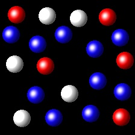
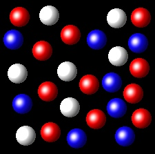

Gases 10
Las partículas correspondientes a tres sustancias gaseosas, A, B y C, se han representado mediante bolas blancas, rojas y azules respectivamente. Las siguientes figuras representan porciones representativas de las tres sustancias en estado gaseoso ocupando el mismo volumen y a la misma temperatura.
 |
 |
 |  |
¿En cuál de las figuras se cumple que PA= 2PB
No es correcto. En esta figura los gases A y B tienen
fracciones molares de 3/16 y 4/16 respectivamente. Por tanto sus presiones parciales estarán en
la relación 3:4.
|
|
Correcto. En esta figura los gases A y B tienen
fracciones molares de 6/16 y 3/16 respectivamente. Por tanto sus presiones parciales estarán en
la relación 2:1 tal como pide la cuestión.
|
|
Incorrecto. En esta figura A y B tienen identicos valores de
sus fracciones molares. Por ello las presiones parciales serán iguales.
|
|
Incorrecto. En esta figura A tiene un valor de la fracción molar, 6/26,
menor que B, 11/26. Por ello las presiones no cumplen la relación indicada.
|